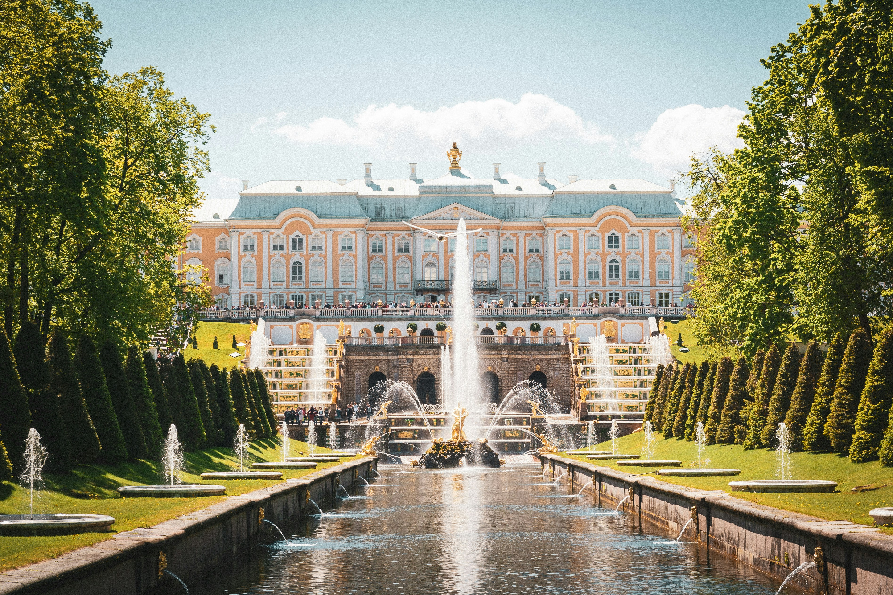
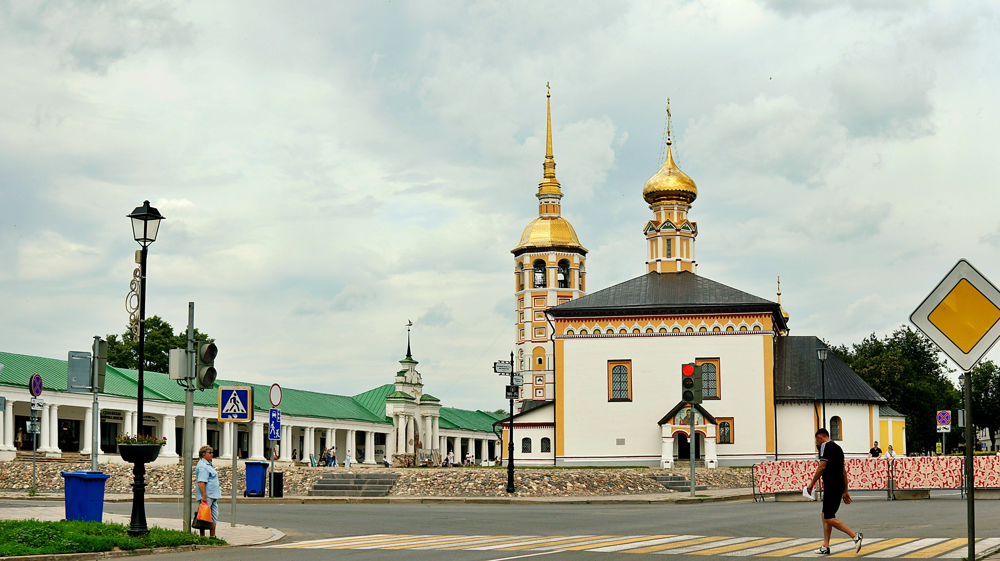
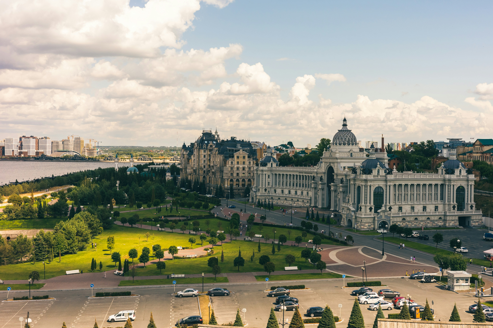
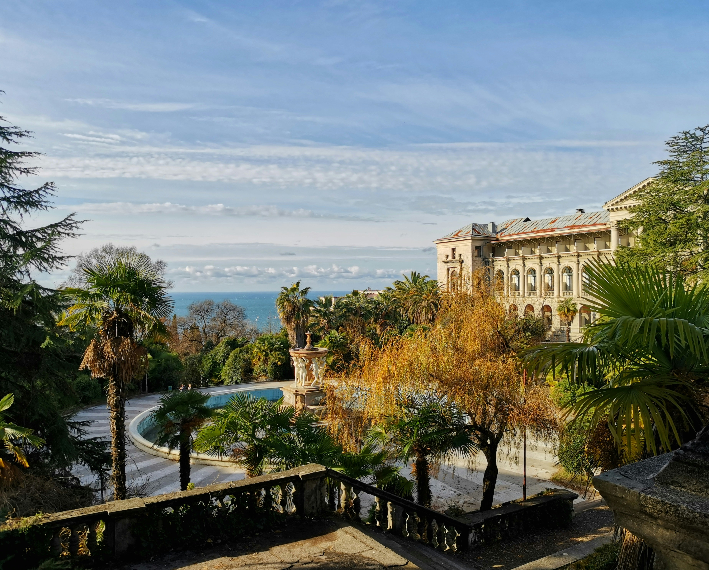
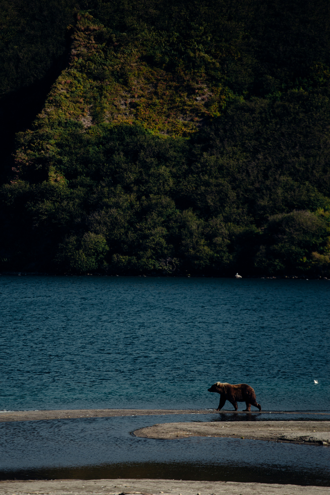

不可错过的 俄罗斯
从西到东，从古典到野性，每一站都独一无二。

莫斯科
俄罗斯的心脏，红场上圣瓦西里大教堂的彩色穹顶是全世界最经典的画面之一。克里姆林宫、国家历史博物馆、古姆百货——每一步都是历史。
📍 建议游玩 2-3 天
Day 1: 红场 → 圣瓦西里大教堂 → 古姆百货 → 亚历山大花园
Day 2: 克里姆林宫 → 基督救世主大教堂 → 特列季亚科夫画廊
Day 3: 莫斯科地铁巡游 → 麻雀山观景台 → 莫斯科河游船

圣彼得堡
俄罗斯的"北方威尼斯"，冬宫博物馆是世界四大博物馆之一。涅瓦大街的欧式建筑、开桥奇观和白夜节，让这座城市充满浪漫气息。
📍 建议游玩 3-4 天
Day 1: 冬宫广场 → 冬宫博物馆（埃尔米塔日）
Day 2: 彼得宫城（夏宫）→ 下花园喷泉
Day 3: 救世主滴血大教堂 → 俄罗斯博物馆 → 涅瓦大街
Day 4: 叶卡捷琳娜宫（皇村）→ 白夜游船

金环城市
莫斯科东北方一串古老城市的珍珠项链，保留着中世纪俄罗斯最纯粹的面貌。木质建筑、白色教堂、修道院和乡村风光。
📍 建议游玩 3-4 天
Day 1: 莫斯科 → 谢尔盖耶夫镇（圣三一修道院）
Day 2: 弗拉基米尔（圣母升天大教堂）→ 博戈柳博沃
Day 3: 苏兹达尔（克里姆林宫、木质建筑博物馆）
Day 4: 雅罗斯拉夫尔或返回莫斯科

喀山
伏尔加河畔的"第三首都"，东正教十字架与清真寺新月共存的奇迹之城。喀山克里姆林宫是世界文化遗产，鞑靼文化与俄罗斯风情在这里完美交融。
📍 建议游玩 2 天
Day 1: 喀山克里姆林宫 → 库尔·沙里夫清真寺 → 圣母领报大教堂
Day 2: 鲍曼步行街 → 鞑靼斯坦国家博物馆 → 伏尔加河滨漫步

索契
黑海之滨的度假天堂，2014 年冬奥会举办地。一边是温暖的海水，一边是高加索山脉的雪峰——一天之内从海滩到滑雪场。
📍 建议游玩 3-4 天
Day 1: 索契海滨大道 → 黑海沙滩
Day 2: 红波利亚纳滑雪场（夏季可徒步）
Day 3: 奥林匹克公园 → 阿洪山观景台
Day 4: 马采斯塔温泉 → 诺维码头游船

贝加尔湖
世界上最深、最古老的淡水湖，拥有地球表面五分之一的淡水资源。冬季的蓝冰奇观、夏季的碧蓝湖水——每个季节都有不同的震撼。
📍 建议游玩 4-5 天
Day 1: 伊尔库茨克 → 利斯特维扬卡（贝加尔湖博物馆）
Day 2: 奥尔洪岛（萨满岩、胡日尔村）
Day 3: 奥尔洪岛北线探险（含伯汗角）
Day 4: 环贝加尔湖铁路小火车
Day 5: 返回伊尔库茨克，游览十二月党人博物馆

堪察加半岛
地球上最后一片真正的荒野。300 多座火山（其中 29 座活火山）、间歇泉山谷、棕熊捕鱼的画面——这里是大自然最原始的舞台。
📍 建议游玩 5-7 天
Day 1: 彼得罗巴甫洛夫斯克 → 阿瓦恰湾游船
Day 2: 直升机前往间歇泉山谷
Day 3: 穆特诺夫火山徒步
Day 4: 库页湖熊观察站（季节限定）
Day 5: 科里亚克民俗村 → 温泉

摩尔曼斯克
北极圈内最大的城市，是追逐北极光的最佳地点之一。极夜期间的蓝色时刻、北极圈标志、冰原上的萨米文化——这里的一切都与极地有关。
📍 建议游玩 2-3 天
Day 1: 摩尔曼斯克市区 → 列宁号核动力破冰船博物馆
Day 2: 萨米民俗村 → 哈士奇雪橇 → 夜间追逐极光
Day 3: 捷里别尔卡（北冰洋小镇）→ 返回